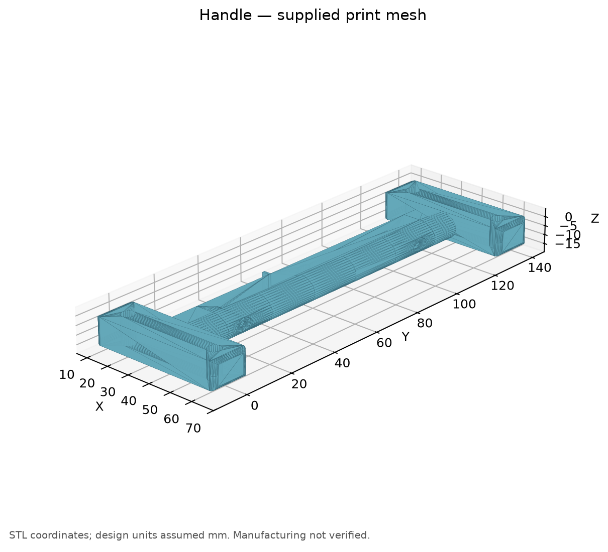
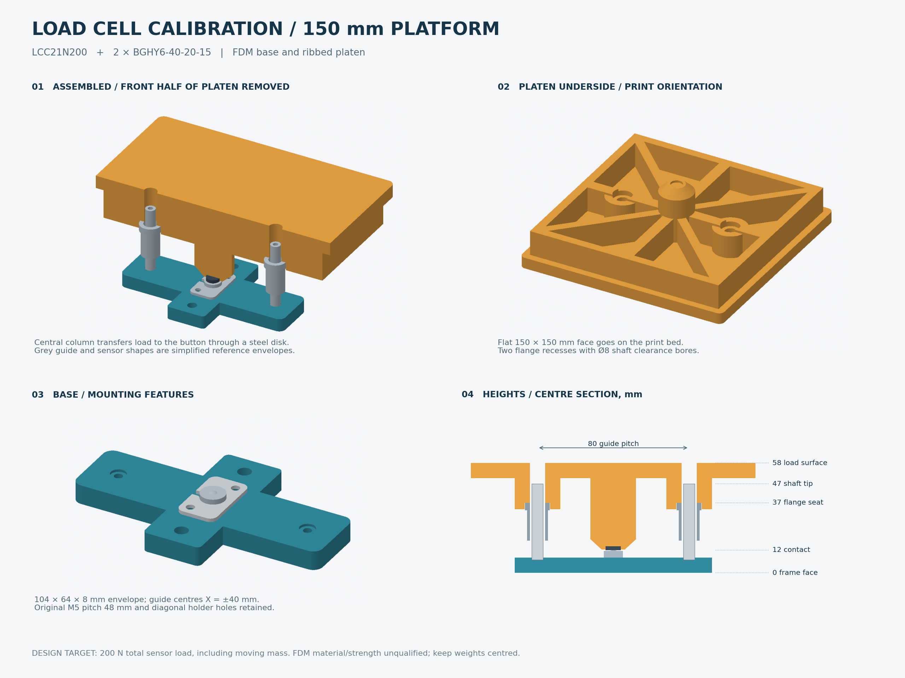

ハンドルと取付部品の3D設計
ハンドルおよびロードセルへの取付部品を設計したFusionモデルと，3Dプリンタ用のSTLデータ

コード・成果物
ハンドルおよびロードセルへの取付部品を設計したFusionモデルと，3Dプリンタ用のSTLデータ

載荷板・土台・ガイドの形状をCadQueryで生成し，ロードセル校正治具のSTEP・STLデータを出力するPythonスクリプト

"""LCC21N200 calibration fixture, millimetres, CadQuery.
Reference envelopes are reconstructed from manufacturer drawings, not OEM CAD.
Material and process are unqualified; this is not a 200 N load certification.
"""
from pathlib import Path
import math, json
import cadquery as cq
M3 = [(-4.0, -10.0), (4.0, 10.0)]
M5 = [(0.0, -24.0), (0.0, 24.0)]
GUIDES = [(-40.0, 0.0), (40.0, 0.0)]
BASE_T = 8.0
SHAFT_BASE = 7.0
SHAFT_TOP = 47.0
DECK_BOTTOM = 50.0
DECK_TOP = 58.0
FLANGE_TOP = 37.0
POST_BOTTOM = 33.5
TIP_FACE = 12.0
PAD_D = 8.0
PAD_T = 2.0
def cylinder(r, z0, z1, x=0, y=0):
return cq.Solid.makeCylinder(r, z1 - z0, cq.Vector(x, y, z0))
def box_solid(w, d, z0, z1, x=0, y=0):
return cq.Workplane('XY').box(w, d, z1 - z0, centered=(True, True, False)).val().translate((x, y, z0))
def rounded_box(w, d, z0, z1, r):
return cq.Workplane('XY').box(w, d, z1 - z0, centered=(True, True, False)).edges('|Z').fillet(r).val().translate((0, 0, z0))
def hexagonal_cutout(x, y, af, z0, z1):
points = [(x + af / math.sqrt(3) * math.cos(i * math.pi / 3), y + af / math.sqrt(3) * math.sin(i * math.pi / 3)) for i in range(6)]
return cq.Workplane('XY').workplane(offset=z0).polyline(points).close().extrude(z1 - z0).val()
def base():
s = rounded_box(24, 64, 0, 8, 2).fuse(rounded_box(104, 28, 0, 8, 4)).clean()
for x, y in M5:
s = s.cut(cylinder(2.75, -1, 9, x, y))
for x, y in M3:
s = s.cut(cylinder(1.75, -1, 9, x, y)).cut(hexagonal_cutout(x, y, 5.8, -0.1, 2.8))
for x, y in GUIDES:
s = s.cut(cylinder(1.7, -1, 9, x, y))
s = s.cut(cylinder(3.5, -0.1, 3.6, x, y))
s = s.cut(cylinder(3.15, 7, 9, x, y))
return s.clean()
def platen():
s = rounded_box(150, 150, 50, 58, 4)
for x, y, w, d in [(0, 67, 140, 6), (0, -67, 140, 6), (67, 0, 6, 140), (-67, 0, 6, 140), (0, 0, 140, 8), (0, 0, 8, 140)]:
s = s.fuse(box_solid(w, d, 32, 50, x, y))
for a in [-45, 45]:
s = s.fuse(box_solid(190, 6, 32, 50).rotate((0, 0, 0), (0, 0, 1), a))
s = s.fuse(cylinder(12, 18, 50))
s = s.fuse(cq.Solid.makeCone(6, 12, 5.5, cq.Vector(0, 0, 12.5)))
s = s.cut(cylinder(4.15, 12.4, 14))
for x, y in GUIDES:
s = s.fuse(cylinder(12, POST_BOTTOM, 50, x, y))
s = s.cut(cylinder(6.7, 16, FLANGE_TOP, x, y))
s = s.cut(cylinder(4, FLANGE_TOP - 0.1, 59, x, y))
return s.clean()
def shaft(x, y):
s = cylinder(3, 7, 47, x, y)
return s.cut(cylinder(1.5, 6.9, 13, x, y)).cut(cylinder(1.5, 41, 47.1, x, y))
def bush(x, y):
s = cylinder(5.5, 17, 37, x, y).fuse(cylinder(6.5, 33, 37, x, y))
return s.cut(cylinder(4, 16.9, 37.1, x, y)).clean()
def sensor():
body = cylinder(5, 8, 11.6)
cap = cq.Solid.makeSphere(3, cq.Vector(0, 0, 9)).intersect(box_solid(12, 12, 11.6, 12.1))
return body.fuse(cap).clean()
def build_parts(reference_dir):
d = {'Base_FDM': base(), 'Platen_FDM': platen(), 'Contact_disk_STEEL_D8_T2': cylinder(4, 12, 14), 'LCC21N200_reference_envelope': sensor(), 'Uploaded_holder': cq.importers.importStep(str(reference_dir / 'holder_reference.step')).val().translate((0, 0, 8))}
for i, (x, y) in enumerate(GUIDES, 1):
d[f'Guide_{i}_shaft_reference'] = shaft(x, y)
d[f'Guide_{i}_bush_reference'] = bush(x, y)
return d
def export_shape(s, name, output_dir, stl=False):
cq.exporters.export(s, str(output_dir / (name + '.step')))
if stl:
cq.exporters.export(s, str(output_dir / (name + '.stl')), tolerance=0.03, angularTolerance=0.1)
def validate_geometry(d):
from itertools import combinations
for name, s in d.items():
assert s.isValid() and len(s.Solids()) == 1, (name, 'invalid')
collisions = []
for (na, a), (nb, b) in combinations(d.items(), 2):
volume = a.intersect(b).Volume()
if volume > 1e-06:
collisions.append([na, nb, volume])
assert not collisions, collisions
b = d['Base_FDM']
p = d['Platen_FDM']
for x, y in M3 + M5 + GUIDES:
assert not b.isInside(cq.Vector(x, y, 4))
for x, y in GUIDES:
assert not p.isInside(cq.Vector(x, y, 55))
assert not p.isInside(cq.Vector(x + 6.6, y, 35))
assert p.isInside(cq.Vector(x + 6.6, y, 38))
for lift in [0, 2.5, 5]:
assert p.translate((0, 0, lift)).intersect(shaft(x, y)).Volume() < 1e-06
assert abs(p.distance(d['Contact_disk_STEEL_D8_T2'])) < 1e-06
assert abs(d['Contact_disk_STEEL_D8_T2'].distance(d['LCC21N200_reference_envelope'])) < 1e-06
return {'units': 'mm', 'base_envelope': [104, 64, 8], 'platen_footprint': [150, 150], 'deck_thickness': 8, 'rib_height': 18, 'guide_pitch': 80, 'shaft_seat_z': 7, 'shaft_tip_z': 47, 'deck_bottom_z': 50, 'deck_top_z': 58, 'shaft_to_deck_underside_clearance': 3, 'shaft_tip_below_load_surface': 11, 'flange_recess_diameter': 13.4, 'flange_recess_depth': 3.5, 'shaft_clearance_bore': 8, 'contact_disk_diameter': 8, 'contact_disk_thickness': 2, 'contact_disk_pocket_diameter': 8.3, 'contact_disk_pocket_depth': 1.5, 'all_shapes_valid': True, 'unintended_volume_collisions': collisions, 'guide_clearance_checked_lift_mm': [0, 2.5, 5], 'fdm_material': 'UNSPECIFIED', 'rated_load_certification': False, 'guide_bush_and_sensor_are_simplified_reference_envelopes': True, 'solid_volumes_mm3': {n: s.Volume() for n, s in d.items()}}
def build_fixture(output_dir: Path, reference_dir: Path):
output_dir = Path(output_dir)
reference_dir = Path(reference_dir)
output_dir.mkdir(parents=True, exist_ok=True)
d = build_parts(reference_dir)
report = validate_geometry(d)
export_shape(d['Base_FDM'], 'calibration_base', output_dir, True)
export_shape(d['Platen_FDM'], 'calibration_platen_150', output_dir, False)
print_shape = d['Platen_FDM'].rotate((0, 0, 0), (1, 0, 0), 180).translate((0, 0, 58))
cq.exporters.export(print_shape, str(output_dir / 'calibration_platen_150_print.stl'), tolerance=0.03, angularTolerance=0.1)
export_shape(d['Contact_disk_STEEL_D8_T2'], 'contact_disk_STEEL_D8_T2', output_dir)
assembly = cq.Assembly(name='LCC21N200_calibration_fixture')
for name, s in d.items():
color = (0.13, 0.48, 0.59) if name == 'Base_FDM' else (0.92, 0.57, 0.18) if name == 'Platen_FDM' else (0.72, 0.76, 0.79)
assembly.add(s, name=name, color=cq.Color(*color))
assembly.save(str(output_dir / 'calibration_assembly.step'))
for fn, expected in [('calibration_base', d['Base_FDM']), ('calibration_platen_150', d['Platen_FDM'])]:
reread = cq.importers.importStep(str(output_dir / (fn + '.step'))).val()
assert reread.isValid() and abs(reread.Volume() - expected.Volume()) < 0.0001
report['step_roundtrip_passed'] = True
(output_dir / 'geometry_checks.json').write_text(json.dumps(report, indent=2))
print(json.dumps(report, indent=2))
return report
if __name__ == "__main__":
import argparse
parser = argparse.ArgumentParser(description="Build the calibration fixture without changing source models.")
parser.add_argument("--output", type=Path, default=Path(__file__).parent / "generated")
parser.add_argument("--reference-dir", type=Path, default=Path(__file__).parent / "models")
args = parser.parse_args()
build_fixture(args.output, args.reference_dir)